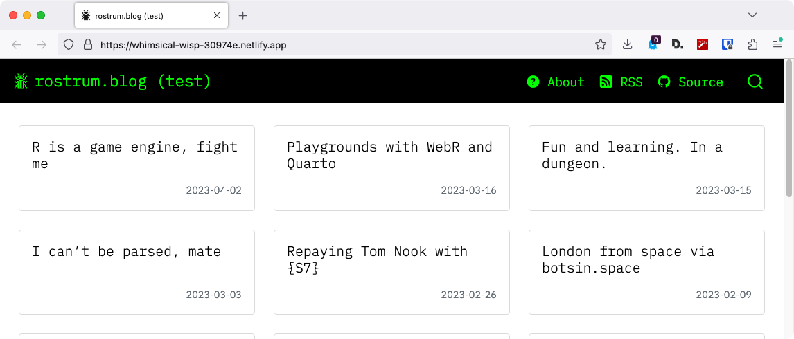

install.packages("remotes") # if not yet installed
remotes::install_github("matt-dray/bd2q")
tl;dr
I’ve written a quick R package, {bd2q}, to help me convert my {blogdown} blog to Quarto. Whether I’ll actually complete the conversion is another story.
Upside blogdown
It is destiny: no-one is ever completely happy with their blog.
This site was built five years ago1 with {blogdown}, which lets you write R Markdown files and have them knitted into a blog. I ignored the newer {distill} package2, but Quarto may be worth the switch. It’ll let me simplify the blog’s structure3 and take advantage of Quarto’s snazzy features4.
But I didn’t fancy transferring and editing ~150 posts by hand, so I’ve written a few functions to help out.
When in doubt, make a package
And so the {bd2q} R package5 is available from GitHub. It does what I need it to do for now, but note it only has basic error checking, has no unit tests, etc. Use at own risk, etc. It’s likely to remain unpolished forever, but feel free to add issues or pull requests. To install:
Three things were in scope for this package:
- Create a template Quarto blog.
- Create the necessary Quarto folder structure for posts, then transfer posts and resources from the old {blogdown} blog.
- Tweak the posts to remove or replace selected lines.
1. Quarto blog template
I assume someone has already written a version of usethis::create_project() for creating a Quarto blog. Regardless, I’ve written bd2q::create_template() to generate a folder with the minimal structure required, which makes my life easier for testing purposes.
bd2q::create_template(q_path = "~/new-quarto-blog")✔ Created template Quarto blog at /Users/mattdray/new-quarto-blogThe skeleton content is opinionated and differs a bit to the one generated through RStudio’s ‘new project’ menu, for example, but the structure is the same:
blog
├── about.qmd
├── index.qmd
├── posts/
│ └── metadata.yml
├── styles.css
└── blog.rprojOf course, now we need to pull in the posts from the old {blogdown} blog.
2. Transfer posts and resources
Typically in a {blogdown} blog, all R Markdown posts and their rendered HTML files are stored together in content/post/ in the form YYYY-MM-DD-post-name.Rmd and YYYY-MM-DD-post-name.html. Resources, like images, live separately in static/post/ with a folder per post in the form YYYY-MM-DD-post-name_files/.
Here’s a simplified folder structure that focuses on a single post and its resources:
blog/
├── content/
│ └── post/
│ ├── YYYY-MM-DD-post-name.Rmd
│ └── YYYY-MM-DD-post-name.html
└── static/
└── post/
└── YYYY-MM-DD-post-name_files/
└── image.pngQuarto simplifies this structure. Each post gets its own folder in posts/, like YYYY-MM-DD-post-name, which contains the post as index.qmd and a folder of resources. This means the post and all its content are stored together in one containing folder.
blog/
└── posts/
└── YYYY-MM-DD-post-name/
├── index.qmd
└── resources/
└── image.pngTo do the conversion, bd2q::transfer_posts() copies posts from a {blogdown} blog structure to a Quarto blog structure, setting up the required folders and renaming each post to index.qmd.
transfer_posts(
bd_path = "~/old-blogdown-blog",
q_path = "~/new-quarto-blog"
)✔ Created posts/ directory structure.
ℹ Copying posts.
✔ Copied 148 posts to /Users/mattdray/new-quarto-blog.Once that’s been run, bd2q::transfer_resources() can copy each post’s resources into an accompanying subfolder, which defaults to the name ‘resources’. You can choose which file types you want transfer with the exts_keep argument.
transfer_resources(
bd_path = "~/old-blogdown-blog",
q_path = "~/new-quarto-blog",
resources_dir = "resources",
exts_keep = c("gif", "jpg", "jpeg", "png", "svg", "wav"),
)ℹ Copying resources.
✔ Copied 455 resources to each post's resources/ folder in Users/mattdray/new-quarto-blog/posts.Of course this doesn’t account for everything, like bits of JavaScript and CSS related to the use of htmlwidgets. I’m not really bothered about this, because these should be recreated when I re-render each post.
Note that you can use bd2q::create_and_transfer() if you want to run create_template(), transfer_posts() and transfer_resources() all at once. Regardless, once you’ve got the structure sorted, you can begin to adjust the posts if you need to.
3. Tweak post content
There’s content in the body of each post that I want to get rid of or make more Quarto-like. I made a few functions that iterate over all the index.qmd files and replace or remove certain content.
One obvious necessity is to rebuild the resource paths (to images, sound files, etc), which can be done specifically with bd2q::update_resource_paths(). It defaults to creating paths to each post’s ‘resources’ subfolder, as generated by bd2q::transfer_resources(). For example, you could use a regular expression to match rows you know will contain a resource path and have them updated for the new Quarto folder structure (I tend to insert images with HTML rather than Markdown, hence the <img> tag in the example below).
update_resource_paths(
q_path = "~/new-quarto-blog",
resources_dir = "resources",
resource_rx = "<img src="
)ℹ Updating posts.
✔ 148 posts updated. I also added two replace/remove functions that are a little more generic.
The first is bd2q::remove_line(), which deletes a single line from each post based on a provided regular expression. When I was messing around with converting the blog to Quarto manually, I found that the presence of the ‘draft’ status in the YAML header would prevent the post from appearing on the homepage, even if was set to ‘no’. As a result, you can run something like this to find and remove the lines that start with ‘draft’:
bd2q::remove_line(
q_path = "~/new-quarto-blog",
detect_rx = "^draft:"
)ℹ Making corrections.
✔ Removed lines matching the regular expression '^draft:' from 128 out of 148 posts.That’s fine for individual lines, but what if you have a sequence of consecutive lines that you want to find and remove, or replace with some other text?
That’s what bd2q::replace_lines() does. Provide a vector of strings that exactly match some consecutive lines in each post, then provide a vector of strings to replace them with (or NULL to simply remove them)6.
This addresses another specific problem I was having. I wanted to update my custom session-info blocks at the bottom of each post so that they instead appear as a Quarto ‘appendix’. That can be done like this:
old_lines <- c(
"---",
"<details><summary>Session info</summary>",
"```{r eval=TRUE, sessioninfo, echo=FALSE}",
"sessioninfo::session_info()",
"```",
"</details>"
)
new_lines <- c(
"## Details {.appendix}",
"<details><summary>Session info</summary>",
"```{r}",
"#' eval = TRUE,",
"#' echo = FALSE",
'cat("Date:", cat(format(Sys.time(), format = "%Y-%m-%d")), "\n\n"); sessionInfo()',
"```"
)
bd2q::replace_lines(
q_path = "~/new-quarto-blog",
match_str = old_lines,
replacement_str = new_lines
)ℹ Making corrections.
✔ Removed lines matching the provided string vector from 9 out of 148 posts. Haha, uhoh, I was expecting to have fixed more posts than that! Looks like I might have written my custom session-info block slightly differently in each post (maybe an extra space or empty line?), so I’ll have to run the bd2q::replace_lines() multiple times to make sure I can replace it in each post that it appears.
Actually use the package? Pfft!
So, is {bd2q} objectively good? No. Does it do what I personally want it to do? Absolutely. Mostly. Yeah?
Of course, transferring files into a new structure is the easy part. The hard part is to see if each post will still re-render after all these years. It’s unlikely! There’s no dependency management in this blog because there was no easy easy to do it. Quarto, meanwhile, has the ability to ‘freeze’ posts and link each post to a {renv} lockfile (thanks Albert) that captures each post’s package dependencies.
There are some other dependencies outside of packages though. For example, I have posts that use the {rtweet} package to fetch tweets from Twitter, but Twitter is a garbage fire and I may never be able to fetch tweets from the API in future. I may have to just copy-paste the outputs that were created when the post was originally rendered, oh well.
To be clear: this is hard work. I may not be brave enough to do it any time soon. I’ve set up a GitHub repo for ‘rostrum-blog-2’ where I’ve been experimenting with styles and structure, so if I ever get round to this task then that’s where the fireworks will be happening.
And hey, at worst I got more familiar with the {fs} and {cli} packages when making {bd2q}, which are for ‘tidy’ path handling and nice user interfaces. A convoluted way to learn!
But that’s what this blog is all about, amirite.
Environment
Session info
Last rendered: 2023-06-29 15:25:33 CESTR version 4.3.1 (2023-06-16)
Platform: aarch64-apple-darwin20 (64-bit)
Running under: macOS Ventura 13.2.1
Matrix products: default
BLAS: /Library/Frameworks/R.framework/Versions/4.3-arm64/Resources/lib/libRblas.0.dylib
LAPACK: /Library/Frameworks/R.framework/Versions/4.3-arm64/Resources/lib/libRlapack.dylib; LAPACK version 3.11.0
locale:
[1] en_US.UTF-8/en_US.UTF-8/en_US.UTF-8/C/en_US.UTF-8/en_US.UTF-8
time zone: Europe/Zurich
tzcode source: internal
attached base packages:
[1] stats graphics grDevices utils datasets methods base
other attached packages:
[1] bd2q_0.0.0.9000
loaded via a namespace (and not attached):
[1] htmlwidgets_1.6.2 compiler_4.3.1 fastmap_1.1.1 cli_3.6.1
[5] tools_4.3.1 htmltools_0.5.5 rstudioapi_0.14 yaml_2.3.7
[9] rmarkdown_2.22 knitr_1.43.1 jsonlite_1.8.5 xfun_0.39
[13] digest_0.6.31 rlang_1.1.1 evaluate_0.21 Reuse
CC BY-NC-SA 4.0